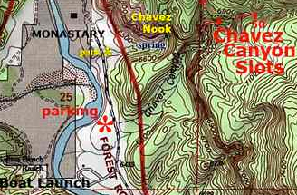

Chavez Canyon Hike



- May 18, 2010: Next door to the monastery
- May 18, 2010: Climb over the hill to find the trail
- May 18, 2010: Other side of the monastery
- May 18, 2010: Arroyos make part of the trail
- May 18, 2010: Easy trail with beautiful views
- May 18, 2010: End reward is the canyon terminus
- https://www.flickr.com/photos/139088815@N08/26744421203/in/album-72157666523519104
- https://www.flickr.com/photos/139088815@N08/26744413903/in/album-72157666523519104
- https://www.flickr.com/photos/139088815@N08/27350779225/in/album-72157666523519104
- https://www.flickr.com/photos/139088815@N08/26744429173/in/album-72157666523519104
- https://www.flickr.com/photos/139088815@N08/27350774105/in/album-72157666523519104
- https://www.flickr.com/photos/139088815@N08/26744435903/in/album-72157666523519104
Chavez Canyon is not a long hike but provides some lovely views of the surrounding terrain. Located off Highway 151 (from US 84 just north of Ghost Ranch) near Christ of the Desert Monastery, the trail proceeds along the canyon floor and across and through some small arroyos en route to its terminus. It is worth the trip if one is in the area, and, as the road parallels the Chama River, pleasant views of the river valley are also enjoyed along the way. There are few online sites that provide sufficient detail, but the SummitPost Canyoneering site was found to be helpful. Another source is the book, Hiking New Mexico by Laurence Parent.